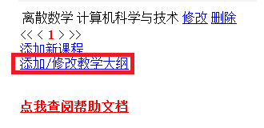
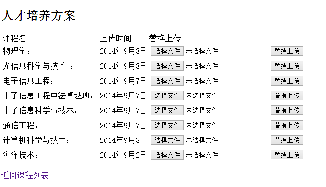
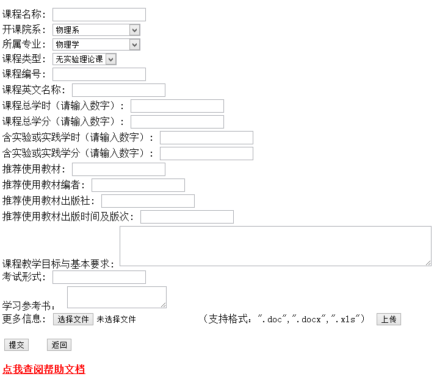

本文档将帮助您了解本本网站后台的全部功能。同时，强烈建议您在详尽阅读本文档后，再对网站进行操作。
强烈建议：强烈建议您使用Chrome或Chrome内核的浏览器（如360浏览器的极速模式）来访问本网站，以获得更好的用户体验。
进入后台的网址是：
http://211.64.142.111/IT/manage/CourseList.aspx
注意：不要将此网址告诉除了您以及其他管理员以外的其他人！
1. 打开上面网址后，您将看到如下界面，点击添加/修改教学大纲进入教学大纲修改功能。

强烈建议：强烈建议您上传PDF版本的教学大纲，PDF文件可以防止您上传的文档在不同电脑上出现格式崩坏的错误。另外，对于某些浏览器来说，PDF是可以在线阅读的。
2. 点击添加/修改教学大纲后，您将看到：

为了替换人才培养方案，您需要做的是：第一步，点击要替换专业行的选择文件按钮，在资源管理器中选择要上传的文件（支持的文件格式有：.doc,.docx,.xls,.xlsx,.pdf,.jpg,.png,.txt,.zip,.rar），第二步点击替换上传按钮，完成替换。
说明：电子系的人才培养方案已上传完成。
说明：可以通过此网址http://211.64.142.111/IT/Display/CourseOutline.aspx预览您上传的文件。
1. 进入添加课程后台的网址是：
http://211.64.142.111/IT/manage/AddCourse.aspx
当然您也可以在上面提到的页面中直接打开添加课程的链接。

2. 再填写课程信息之前，您需要首先需确定几件事情。
a) 您的课程是所属那个系哪个专业的
b) 您的课程的类型是哪一种？（无实验理论课？有实验理论课？实验课？）
为了方便您做出判断，下面对课程类型进行说明：
a) 无实验理论课
无实验理论课是指，在这一门课中只有理论课，没有实验课的课程，如：离散数学（共51学时，其中含实验0学时）。
b) 有实验理论课
有实验理论课是指，在这一门课中不仅包含理论课，还包含实验课，如：电路电子学（共85学时，其中含实验17学时）
c) 实验课
实验课是指以周围教学单位的课程，如：C++课程设计。
3. 好了，当您知道上面的事情之后，您就可以填写课程的其他信息了。填完之后直接提交就可以了。
a) 修改课程同添加课程，请用户参考上面内容。